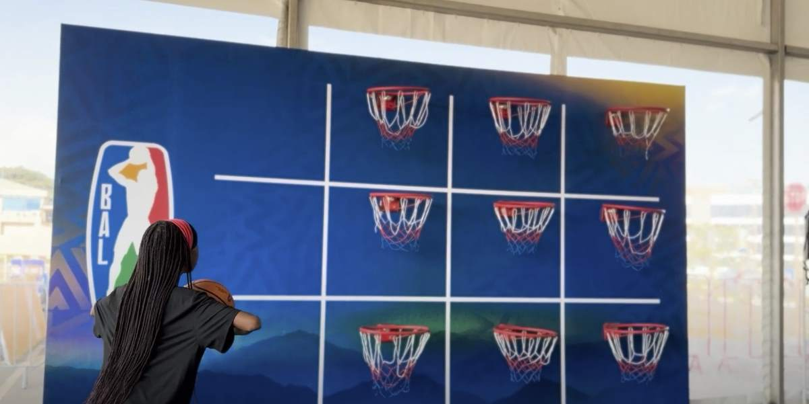
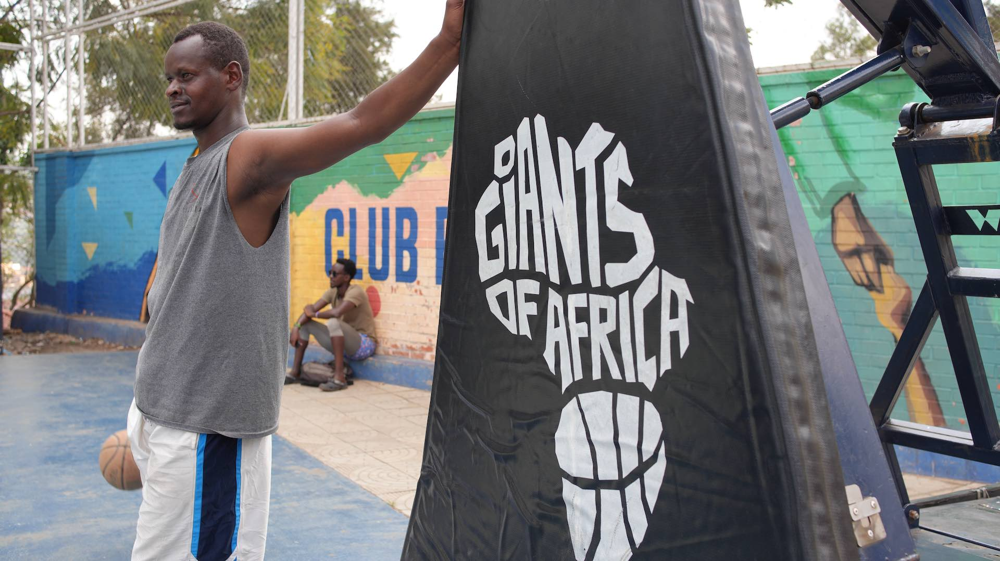

In Africa, NBA’s investment and ambition far outstrip other US pro leagues By Sam Jane | Capital News Service KIGALI, Rwanda — Comedian Dave Chappelle, Toronto Raptors President Masai Ujiri and former National Basketball Association All Star Luol Deng all appeared at the Basketball Africa League championship weekend. The three-day stretch in Rwanda’s capital city was supposed to mirror the NBA’s All Star weekend, a celebration and culmination of the league’s success. The NBA has created something unprecedented among Western professional sports leagues—a comprehensive program in Africa to develop talent from a youth academy in Senegal to a pro league with teams in 19 countries. In an interview with Capital News Service, NBA Deputy Commissioner Mark Tatum said “there’s no doubt” the league is far ahead of competitors. “Just factually, we’re doing a lot more in Africa than anybody else.”
The NBA faces significant challenges in Africa, though. Seven of the 10 poorest countries in the world lie on the continent. That’s an obstacle for a business that relies on the sale of tickets, merchandise and streaming rights. The league also has drawn criticism for working with a government seen by many as undemocratic. The BAL Championship is held in Rwanda, where, according to the US Agency for International Development, “concerns about democracy and governance remain, including highly centralized political power, nonexistent political opposition, weak civil society, and limited media freedom.” Other leagues including the National Football League, Major League Baseball and the National Hockey League are investing in their brands and sports globally. The NFL has invested in an international series, playing games in London and Mexico City. The NHL has websites in Spanish, Czech, Finnish, French, German, Slovak, Swedish and Russian, driving significant online engagement, according to Sports Business Journal.
In 2023, the World Baseball Classic, which was created by MLB, reached high marks drawing 5.2 million viewers and had more viewers in Japan than the 2020 Olympics. Japan’s Shohei Ohtani, baseball’s biggest star, signed a $700 million dollar contract with the Los Angeles Dodgers this offseason. John Moag, chairman and CEO of Moag & Company, a Baltimore-based sports investment firm, said that Ohtani’s international marketability has generated substantial profits for the Dodgers. “It’s all about growth, mainly revenue growth,” Moag said. “None of these leagues are going out and spending money if they don’t get any return... There will be losses, but they will want returns eventually.”
Not all international ventures work out, though. The NFL started a developmental league, NFL Europe, in 1989. After four years the league was suspended. Among Western pro sports leagues, the NBA is dominant in Africa. Other leagues have attempted grassroots efforts, such as the NFL’s international youth camps in Ghana and Kenya, but the NBA has made Africa its crown jewel. “I do think the future [of professional sports] is international,” said Lindsay Krasnoff, visiting clinical assistant professor at New York University’s Institute for Global Sport. Major League Baseball, a league that featured 264 international players in 2024, has no African-born players on a current roster. The NHL has no presence on the continent either.
The NBA has advantages in Africa. Unlike American football or baseball, which require expensive equipment, a basketball game can start with players, a ball and a hoop. The rules are relatively easy to learn. And the skills needed to excel can be acquired relatively quickly. Two African players who became stars in the NBA, Joel Embiid and Hakeem Olajuwon, started playing at age 15. The NBA’s outreach in Africa began over 60 years ago, decades before other professional sports leagues. NBA Hall of Fame inductee Bill Russell hosted basketball clinics in Africa to advance the game in 1959. The late NBA commissioner David Stern traveled to South Africa in 1993, where he met anti-apartheid activist Nelson Mandela, who later became the country’s first president. Mandela and Stern discussed the future of basketball in Africa and Stern often referred to the meeting as one of the most impactful of his career, Tatum recalled.
“Africa has always been a focus of ours,” Tatum said.
Basketball Africa League, NBA Academy Africa in Senegal and the NBA Basketball school in Egypt form a significant African portfolio for the NBA. In 2021, the league formed NBA Africa which encompasses 12 of the top club teams from 12 African countries. NBA Africa was valued at $1 billion in 2021, NBA Commissioner Adam Silver said in May 2021. Investors including former President Barack Obama, Nike, Jordan Brand, and former NBA players such as Joakim Noah and Deng helped the league start fast. It has continued to grow, as attendance at BAL games increased 73% from 2023, according to the NBA. More than 120,000 fans attended BAL games. Like many international ventures launched by U.S. pro leagues, the NBA’s efforts haven’t been profitable so far. Profits will eventually come, according to BAL’s CEO Clare Akamanzi.
“We see the investment the NBA has put in the continent as a long-term investment,” Akamanzi said. “Our plan is a 10-year plan, we’re only in season four. So we know that we will [eventually] be profitable.” “There’s no doubt that right now, we are in investment mode,” Tatum said.
BAL is projected to lose $19 million in 2024, up from a $17 million deficit in 2023, Sports Business Journal reported in January. While attendance has doubled this year, the league’s regular-season games fell short of sellouts. Average ticket prices for the BAL playoff quarterfinal and semifinal games were equivalent to $1.20 in US currency. Streaming packages in Africa are similarly low- priced by American standards. A league pass subscription costs $46 and a yearly subscription is $62, according to the BAL. The NBA’s largest driver of revenue is television. NBA games were broadcast in all 54 African countries and live telecasts of more than 140 games in Africa generated a 41% year-over-year increase in average viewership and nearly 6 million total watch hours, the BAL says. A challenge for the NBA is growing access to basketball – courts and instruction. In many parts of the continent, basketball courts are rare with rural areas especially lacking places for children to play and learn. Giants of Africa, a nonprofit organization headed by Ujiri, the Toronto Raptors president, has been instrumental in construction of 55 courts and has a plan to build as many as 100 in Africa.
There currently are courts in Kenya, Rwanda, Nigeria and Senegal. The NBA also has pushed governments to invest in arenas and has facilitated deals with Nike and the Jordan Brand to sponsor the BAL, according to the U.S. Global Leadership Coalition. “That’s one of the challenges we’ve been trying to tackle,” Zephanie Niyonkuru, permanent secretary of the Rwanda Ministry of Sports, said. “Making sure that we build courts, working with the local government. So infrastructure is the number one [challenge].” Akamanzi said the NBA has focused on professionalizing the basketball environment. BAL shooting guard Nick Faust, who has played in multiple countries, said the BAL is the most professional league he’s played in. She said encouraging the private sector to use sports as a marketing strategy has taken time, as well.
“What we’re really looking forward to is...using sports to drive economic developments in different countries,” Akamanzi said.
At the BAL championship in Kigali, Rwanda, that plan appears to be working. In June, streets surrounding BK Arena were lined with vendors selling BAL gear. In a “Fan Zone,” a few locals bought food.
Inside the 10,000-seat arena, the stadium nearly filled in the second half. Fans saw high level play from former Maryland men’s basketball wing Nick Faust and longtime BAL guard Solo Diabate. DJs blasted music, fans erupted at deep three pointers and alley-oop dunks. “The game of basketball belongs to us,” former NBA forward Ian Mahinmi said. “The vision for basketball in Africa started a long time ago, that’s why I think the NBA is so far ahead of the NFL.” Further expansion seems likely. In the 2024 NBA draft, nine draftees were from Africa. “We want to make the BAL one of the best leagues in the world in the next decade and I think we are rapidly progressing towards that goal,” Tatum said.